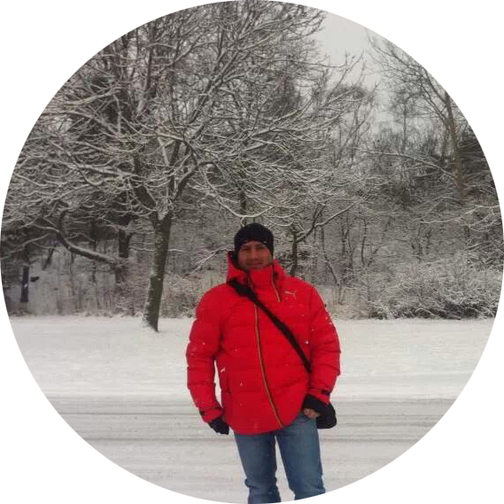
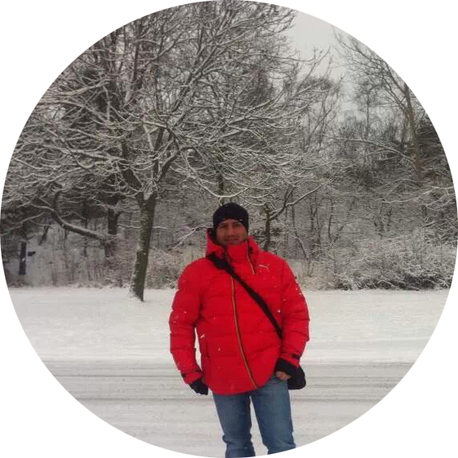
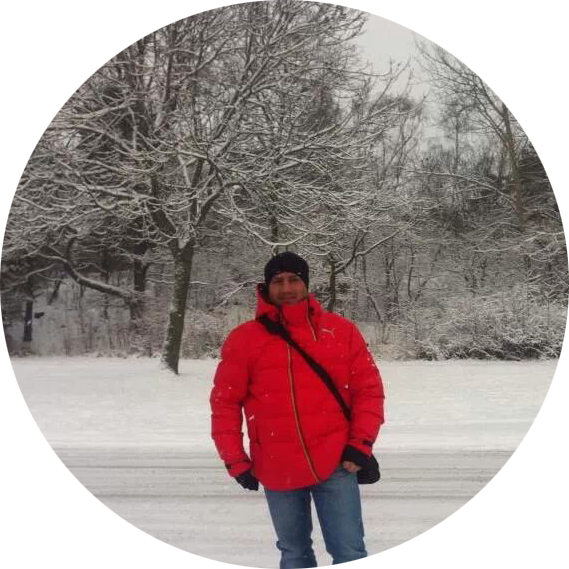

Stalin Gutiérrez.
Programador web.
 

Programador web.

Soy estudiante del INS Brianda de Mendoza. Inicié mis estudios como Desarrollador Web en 2020.
Una de mis grandes pasiones es la tecnologia, hace ya algún tiempo he estado aprendiendo por iniciativa propia programación. Inicialmente buscando información en Google Actívate.
Actualmente estoy siguiendo varias plataformas educativas online, en la busqueda de asimilar los lenguajes de programaciòn que me permitan diseñar webs de alto rendimiento.
A la vez, estoy cursando un grado superior (F.P), cuya modalidad es a distancia. Tanto DAM, como DAW, comparten las mismas bases en su primer año de carrera,
la cual se vuelve mas especializada en el segundo año, por ahora estoy enfocado en dominar los lenguajes de HTML, CSS, y JS, que son las bases del diseño web.Como parte de mi educación en DAW, estoy abarcando lenguajes como Java, HTML, CSS, y Javascript.
Soy bachiller en el àrea de Química y Biologia, posteriormente estudié dos años en la facultad de odontologia
de la Universidad estatal de Cuenca. Años mas tarde
estudié ingles en Reino Unido, y sueco en la ciudad de Estocolmo, actualmente estoy cursando el primer año en Desarrollo de aplicaciones web.
Adjunto los enlaces de las instituciones donde he estudiado.
Técnico Superior en desarrollo de aplicaciones web.
| primer curso | horas | segundo curso | horas |
|---|---|---|---|
| Sistemas Informáticos | 180 | Desarrollo Web en entorno cliente | 140 |
| Bases de datos | 185 | Desarrollo Web en entorno servidor | 180 |
| Programaciòn | 205 | Despliegue de aplicaciones web | 94 |
| Lenguajes de marcas y sistemas de información | 134 | Diseño de interfaces web | 120 |
| Entornos de desarrollo | 110 | Proyecto de desarrollo de aplicaciones web | 40 |
| Inglés técnico para los ciclos formativos de grado superior de la familia profesional Informática y Comunicaciones |
64 | Empresa e iniciativa emprendedora | 66 |
| Formación y orientación la boral | 82 | Formación en centros de trabajo | 400 |